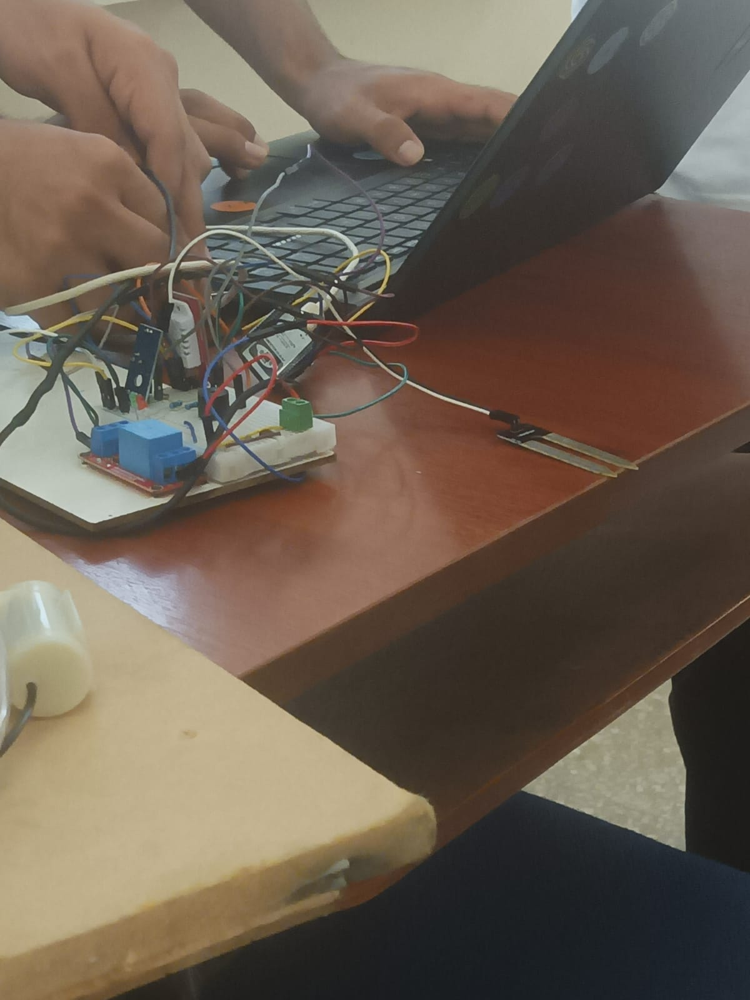
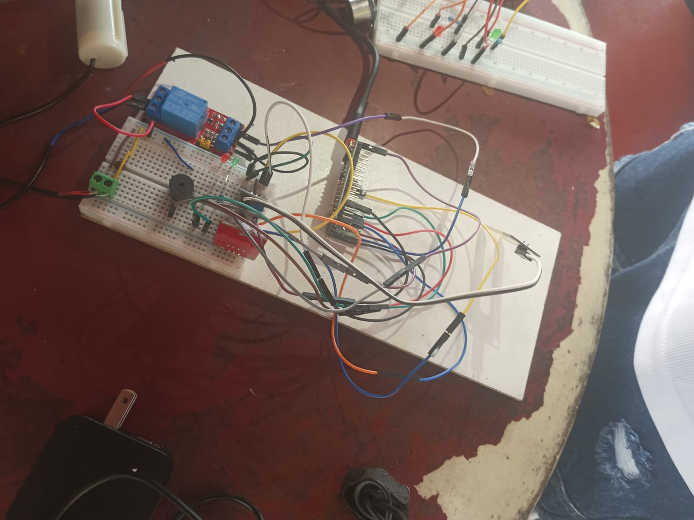
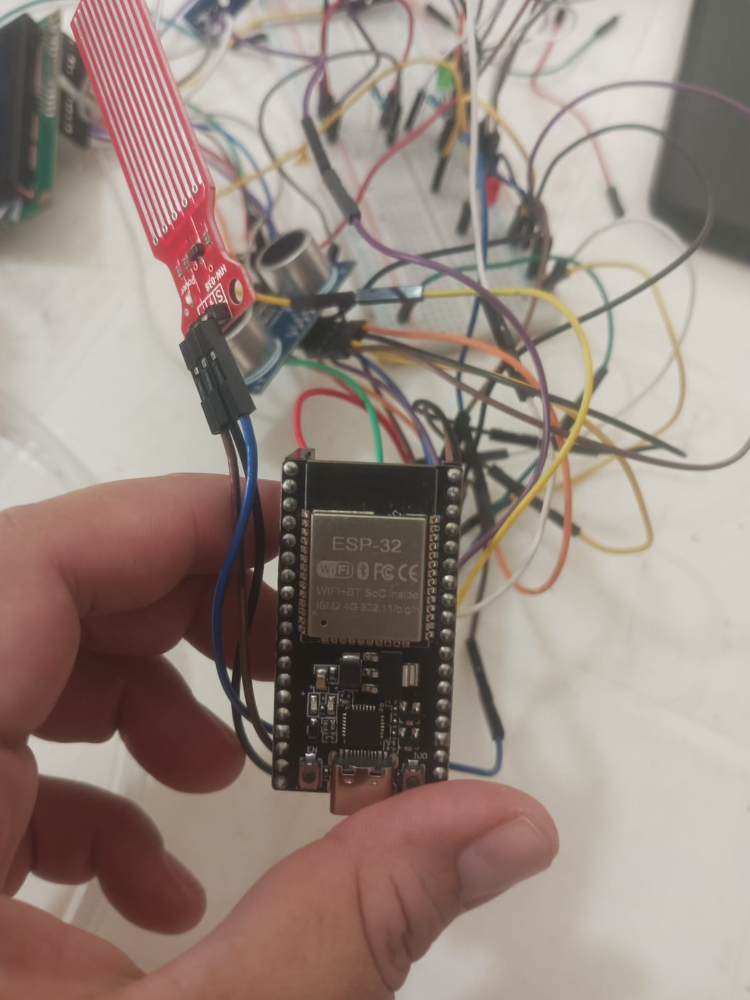
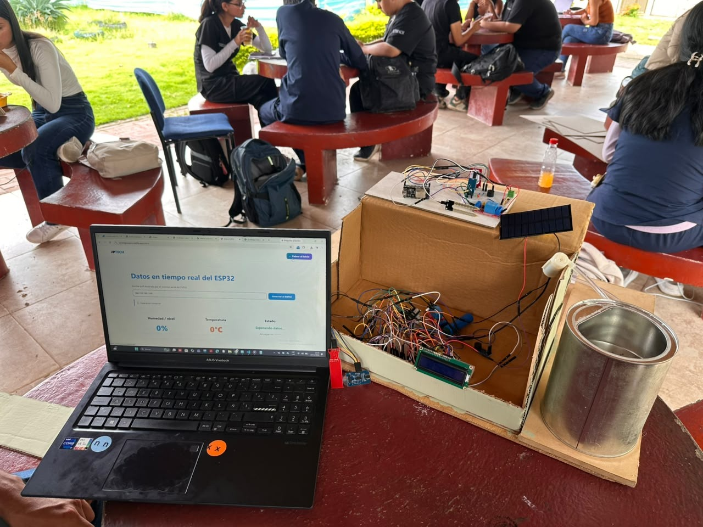

🌿 Misión
Crear una solución de riego accesible que ahorre agua y tiempo.
Innovación estudiantil para el campo
RiegoSmart optimiza el uso del agua, reduce la supervisión manual y permite monitorear el sistema desde una página web.
Conocer RiegoSmartSobre nosotros
Somos ocho estudiantes de Nivelación de Tecnologías de la Información de la Universidad Técnica de Machala. Desarrollamos RiegoSmart para apoyar a agricultores mediante automatización, monitoreo y uso responsable del agua.
Crear una solución de riego accesible que ahorre agua y tiempo.
Convertir RiegoSmart en una propuesta adaptable para productores.
Automatizar el control del agua y mostrar información útil.
Disminuir desperdicios y aprovechar energía solar para la bomba.
Nuestro producto
RiegoSmart utiliza un ESP-32S, sensores, actuadores y un panel web. El tanque principal abastece la plantación; cuando el agua alcanza el límite, el sistema puede dirigir el excedente al reservorio.
Componentes del prototipo
La sección reúne los componentes empleados, sus conexiones principales y el papel que cumplen dentro del prototipo.
Controlador central. Lee sensores, procesa valores, activa alertas y controla el relé. Se conecta por USB/OTG para programación y como respaldo de la electrónica de control.
Muestra nivel, temperatura, alertas y estado del sistema.
Modo paralelo: GPIO 27, 16, 33, 13, 5 y 12. V0 ajusta el contraste.Mide temperatura y humedad ambiental para complementar el monitoreo local y web.
Mide la distancia hasta la superficie del agua para estimar el nivel del tanque.
Trig 23 · Echo 22 · ≥ 14,0 cm: tanque vacío.Detecta agua en el límite superior para reconocer que el tanque alcanzó el nivel definido.
GPIO 34 · umbral ≥ 1500.Detecta movimiento o presencia cerca del prototipo.
GPIO 26.Funciona como interruptor controlado por el ESP32 para encender o apagar la bomba sin conectarla directamente al microcontrolador.
Control: GPIO 25.Impulsa el agua hacia el riego. La batería de 3,7 V alimenta únicamente la bomba.
Genera un patrón intermitente cuando el tanque está vacío.
GPIO 4.Rojo para alerta, verde para funcionamiento normal y amarillo para atención.
Rojo 2 · verde 18 · amarillo 32, con resistencias limitadoras.Protege frente a los picos producidos por el motor al apagarse.
En paralelo: franja al positivo/NO del relé; sin franja al negativo/OUT−.Filtran ruido y estabilizan la alimentación, especialmente cerca de la LCD.
Cerámico 104 de 100 nF y segundo condensador de apoyo en paralelo.Convierte luz solar en electricidad y la envía al cargador para recuperar la batería.
Controla la carga de la batería de litio de 3,7 V proveniente del panel solar.
Almacena energía solar y alimenta exclusivamente la bomba, no el ESP32, la LCD ni los sensores.
Permite montar y modificar el circuito durante las pruebas sin soldar.
Conectan módulos y sensores. Se emplean macho–macho, hembra–macho y hembra–hembra.
Limitan corriente y protegen los LEDs y otros elementos del circuito.
¿Cómo funciona?
Simulación
La simulación representa la integración del ESP32, los sensores, indicadores, relés y bombas utilizados para validar la lógica del proyecto antes del montaje físico.
 Ver simulación completa ↗
Ver simulación completa ↗Abre el circuito público para revisar los componentes, conexiones y funcionamiento propuesto de RiegoSmart.
Abrir simulación ↗El enlace se abre directamente en una pestaña nueva.Datos ESP32
Nuestro proceso






Desarrollo tecnológico y código
Algoritmos y pseudocódigo.
Lógica desarrollada durante el proceso académico.
Código del ESP32 y conexiones.
Talento estudiantil
Contacto y ventas
Si te interesó este producto con alto potencial en el área de la agricultura, puedes enviarme un correo y nos ponemos en contacto.
✉